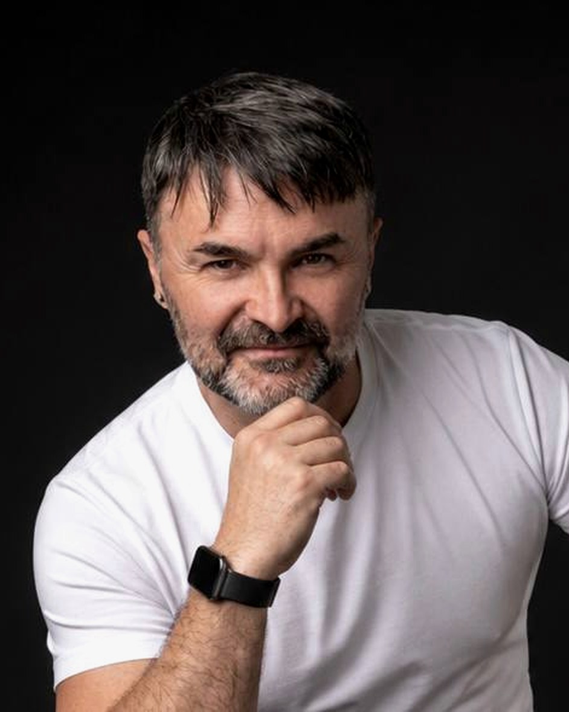

AI Strategy & Project Lead — Madrid
DAVID
ORTIZ SERRANO
I turn AI strategy into real-world execution.
Artificial Intelligence · Technology · Transformation · Innovation
I lead the projects that make AI real in the enterprise — aligning technology, business and people to deliver what strategy promises.

01 — Who I Am
Technology is my profession.
AI is my next frontier.
For more than 25 years I have worked where technology meets business — first as a developer, then as a project leader, and today as the person responsible for making AI real inside one of Europe's leading IT consultancies.
I work inside the AI Lab at GFT: leading AI projects end to end, and owning the layer that most people forget — agent governance. Enterprise architecture, security and control of AI agents, and the quality gates that review what agents deliver before anything reaches production.
Alongside delivery, part of my job is thinking ahead: turning agentic AI ideas into product concepts with real business potential. That is what the lab is for — and it is where strategy becomes execution.
My clients are some of the most demanding institutions in European banking. My job is to close the gap between what strategy promises and what the organisation can actually execute. That gap is where most AI initiatives die. I exist to make sure yours doesn't.
02 — What I Do
AI capabilities, built as a system — not a skill list.
AI strategy without delivery is a slide deck. Delivery without strategy is a cost centre. I operate across the full chain — because that is where value is actually created.
AI Strategy
Defining what AI should do for the business — and what it should not. Roadmaps, prioritisation and alignment with real objectives.
AI Project Leadership
Leading multidisciplinary teams through the full AI project lifecycle — Waterfall and Agile — from first scope to production.
AI Transformation
Embedding AI into how enterprise organisations actually work: people, process and technology moving together.
Project Delivery
Optimising time, resources and quality on complex technology projects. 15+ years of enterprise delivery, end to end.
Digital Transformation
Technology roadmaps and transformation programmes for banking leaders — where regulation, legacy and innovation collide.
Business Alignment
Making sure every initiative answers a business question — not a technology one. Data-driven decisions, honest trade-offs.
AI Agent Governance
Security, control and quality gates for AI agents — the layer that decides what ships to production and what doesn't.
Agentic Product Ideation
Turning agentic AI ideas into product concepts — exploring what intelligent agents can become for real businesses.
03 — What I've Led
A career built in three acts.
From writing enterprise software to leading the AI Lab of a global consultancy. Same thread throughout: making technology work for the business.
GFT IT Consulting
Current 2016 — PresentAI project leadership · Agent governance & product ideation · AI Lab, GFT
Leading AI projects inside the AI Lab of GFT for BBVA, Deutsche Bank and BANKIA — with a focus on agent governance: enterprise architecture, security and control of AI agents, and the quality gates that review agent deliveries before they reach production. Alongside delivery, working on agentic product ideas — turning them into concepts with real business potential.
SOTEC
2011 — 2016Agile project direction · Enterprise Banking
Direction of agile technology projects for ISBAN. The turning point: from building technology to leading the people who build it — delivery, quality and teams under one roof.
CALCULO
2000 — 2011Functional analysis & senior development · Enterprise Solutions
Functional analysis and senior development in enterprise solutions for MAPFRE. Where I learned how technology really works — from the inside out.
04 — How I Think About AI
AI is not the strategy. It's the amplifier.
“AI doesn't replace strategy. It changes what strategy can achieve.”
My Experience
I have spent years leading AI projects inside the enterprise — not researching models, not writing code, but making AI work for real businesses with real constraints: regulation, legacy systems, risk and people. That is a different discipline, and it is the one I practice.
My Perspective
Most AI initiatives fail because of alignment, not technology. The gap is never the model — it is the bridge between what AI can do and what the business needs. Building that bridge is a project problem, a change problem and a human problem — and, with agents, a governance problem. That is the problem I solve.
05 — What Makes Me Different
The human difference.
Magician · Mentalist · Hypnotist — 25+ years
Think differently. See what others miss.
Before technology, I spent more than 25 years studying the one variable no algorithm can model: people. Magic is the discipline of attention, perception and narrative — and it shares its toolkit with the highest-leverage work in technology leadership.
Observation. Communication. Lateral thinking. Storytelling. The same skills that make an audience believe the impossible are the ones that get stakeholders to commit to a transformation — and that turn a room full of sceptics into a team that delivers.
For more than 25 years, magic has taught me something technology can't: how to understand people.
Recruiter Snapshot
David in 30 seconds.
Experience
15+ YEARS
Technology & project leadership
AI
Strategy
Projects · Agent governance
Leadership
Teams
Multidisciplinary delivery teams
Industry
Enterprise
Banking & technology
Location
Madrid
Spain — remote-ready
06 — Let's Build What's Next
If you're building what's next with AI, let's talk.
AI Director · Head of AI · Technology Director · CIO · CTO · Innovation Director — or the recruiter who knows one. I bring strategy, execution and 25 years of making technology work for people.